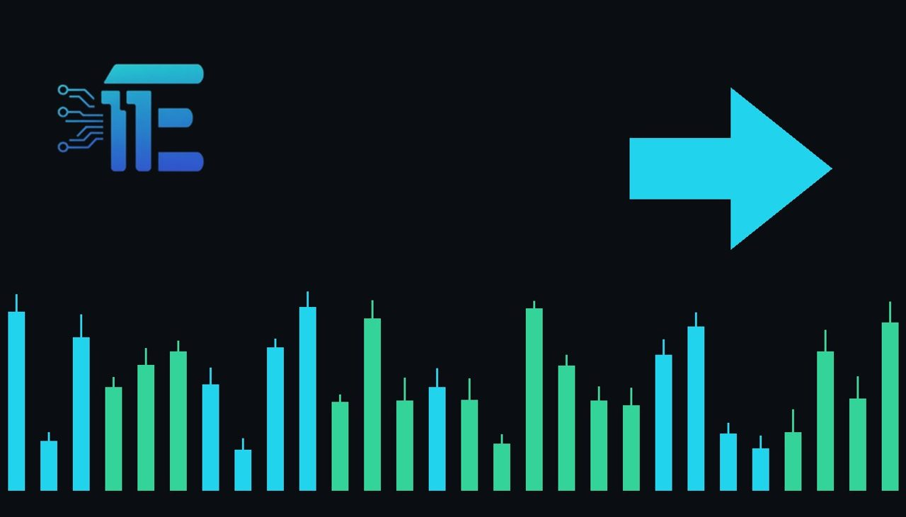

WTI Crude Hits $117 as Geopolitical Strains Lift Energyប្រេងឆៅ WTI ហក់ឡើងដល់ 117 ដុល្លារ ខណៈភាពតានតឹងភូមិសាស្ត្រនយោបាយកើនឡើង
XAU/USD impact: ◆ Mixedផលប៉ះពាល់លើ XAU/USD: ◆ ចម្រុះ

WTI crude climbed to $117 per barrel as geopolitical tensions rattled broader markets. The sharp energy surge affects gold by stoking inflation concerns against the risk of prolonged central bank tightening.
ប្រេងឆៅ WTI បានឡើងថ្លៃដល់ 117 ដុល្លារក្នុងមួយបារ៉ែល ដោយសារភាពតានតឹងភូមិសាស្ត្រនយោបាយបានដាក់សម្ពាធលើទីផ្សារទូទៅ។ ការកើនឡើងថ្លៃថាមពលយ៉ាងគំហុកនេះជះឥទ្ធិពលចម្រុះលើមាស ដោយបង្កើនការព្រួយបារម្ភពីអតិផរណា និងហានិភ័យនៃគោលនយោបាយរូបិយវត្ថុតឹងរ៉ឹង។
On October 23, 2026, WTI crude oil climbed to $117 per barrel, triggering a sharp rally in energy equities and cybersecurity shares. The sudden spike in petroleum prices unfolded as heightened geopolitical tensions weighed heavily on broader risk appetite across global financial markets.
កាលពីថ្ងៃទី 23 ខែតុលា ឆ្នាំ 2026 តម្លៃប្រេងឆៅ WTI បានហក់ឡើងដល់ 117 ដុល្លារក្នុងមួយបារ៉ែល។ ការស្ទុះឡើងយ៉ាងគំហុកនេះបានផ្តល់សន្ទុះយ៉ាងខ្លាំងដល់ភាគហ៊ុនថាមពល និងភាគហ៊ុនសន្តិសុខតាមអ៊ីនធឺណិត (cybersecurity) ខណៈដែលភាពតានតឹងភូមិសាស្ត្រនយោបាយកាន់តែខ្លាំងបានដាក់សម្ពាធលើចំណង់ហានិភ័យនៅក្នុងទីផ្សារទូទៅ។
For gold traders (XAU/USD), an abrupt surge in energy prices operates through complex and conflicting transmission channels. Higher oil costs directly amplify headline inflation forecasts. As inflation concerns mount, sovereign bond yields and the US dollar frequently experience upward pressure because market participants anticipate that central banks, notably the Fed, may keep interest rates higher for longer to prevent persistent price pressures.
សម្រាប់អ្នកជួញដូរមាស (XAU/USD) ការកើនឡើងយ៉ាងខ្លាំងនៃតម្លៃប្រេងឆៅបានជះឥទ្ធិពលតាមរយៈច្រកចម្រុះជាច្រើន។ ការកើនឡើងថ្លៃប្រេងឥន្ធនៈបានរុញច្រានការរំពឹងទុកនៃអតិផរណាទូទៅឱ្យកើនឡើងដោយផ្ទាល់។ ជាលទ្ធផល អត្រាផលប័ត្រសញ្ញាបណ្ណ និងប្រាក់ដុល្លារអាមេរិក (USD) ជារឿយៗតែងតែរឹងមាំឡើង ដោយសារអ្នកចូលរួមក្នុងទីផ្សាររំពឹងថា ធនាគារកណ្តាល ជាពិសេស Fed អាចនឹងរក្សាអត្រាការប្រាក់តឹងរ៉ឹងក្នុងរយៈពេលយូរដើម្បីទប់ស្កាត់ការកើនឡើងតម្លៃទំនិញជាបន្តបន្ទាប់។
Simultaneously, a sharp rise in energy prices driven by geopolitical stress dampens general investor sentiment and heightens stagflation concerns. When surging energy costs coincide with softer economic momentum, market participants often turn to gold as an established hedge against broader economic disruption and geopolitical instability.
ទន្ទឹមនឹងនេះ ការកើនឡើងថ្លៃប្រេងដែលបណ្តាលមកពីជម្លោះភូមិសាស្ត្រនយោបាយ ក៏អាចបង្កើនភាពមិនប្រាកដប្រជាជាប្រព័ន្ធ និងដាក់បន្ទុកយ៉ាងខ្លាំងលើអារម្មណ៍ទីផ្សារភាគហ៊ុនទូទៅផងដែរ។ នៅពេលដែលការកើនឡើងនៃថ្លៃដើមថាមពលគំរាមកំហែងដល់កំណើនសេដ្ឋកិច្ច ហានិភ័យនៃ stagflation អាចជំរុញឱ្យមាសទទួលបានការចាប់អារម្មណ៍កាន់តែខ្លាំងក្នុងនាមជាទ្រព្យសម្បត្តិរក្សាតម្លៃ និងជាជម្រកសុវត្ថិភាពប្រឆាំងនឹងអស្ថិរភាពភូមិសាស្ត្រនយោបាយ។
Looking forward, if elevated crude prices lead to higher nominal Treasury yields and sustained strength in the US dollar due to expectations of tight monetary policy, bullion could encounter notable selling pressure. Conversely, if geopolitical friction deepens and market turbulence accelerates safe-haven flows, gold could receive substantial defensive backing.
សម្រាប់ទស្សនវិស័យបន្ទាប់ ប្រសិនបើតម្លៃប្រេងនៅតែបន្តខ្ពស់ ហើយរុញច្រានឱ្យអត្រាផលប័ត្រសញ្ញាបណ្ណ និងប្រាក់ដុល្លារអាមេរិកកើនឡើងដោយសារការរំពឹងទុកលើការរក្សាអត្រាការប្រាក់ខ្ពស់ មាសអាចនឹងប្រឈមមុខនឹងសម្ពាធធ្លាក់ចុះ។ ផ្ទុយទៅវិញ ប្រសិនបើជម្លោះភូមិសាស្ត្រនយោបាយកាន់តែធ្ងន់ធ្ងរ ហើយជំរុញឱ្យមានការភ័យខ្លាច stagflation កាន់តែខ្លាំង តម្លៃមាសអាចនឹងទទួលបានការគាំទ្រយ៉ាងរឹងមាំពីតម្រូវការទិញដើម្បីសុវត្ថិភាព។
Market participants should closely watch whether WTI crude maintains price levels near $117, how upcoming inflation readings reflect higher energy inputs, and any subsequent shifts in central bank interest rate expectations.
អ្នកជួញដូរគួរតែបន្តតាមដានថាតើតម្លៃប្រេងឆៅ WTI អាចរក្សាកម្រិត 117 ដុល្លារនេះបានយូរប៉ុណ្ណា ព្រមទាំងទិន្នន័យអតិផរណា និងការឆ្លើយតបនៃទីផ្សារបំណុលចំពោះការរំពឹងទុកលើអត្រាការប្រាក់ និងការវិវត្តនៃស្ថានការណ៍ភូមិសាស្ត្រនយោបាយ។
Key takeawaysចំណុចសំខាន់ៗ
- WTI crude oil reached $117 per barrel on October 23, 2026, amid heightened geopolitical tensions.
- តម្លៃប្រេងឆៅ WTI បានឡើងដល់ 117 ដុល្លារក្នុងមួយបារ៉ែលនៅថ្ងៃទី 23 ខែតុលា ឆ្នាំ 2026 ដោយសារភាពតានតឹងភូមិសាស្ត្រនយោបាយ។
- Soaring energy costs raise inflation risks, potentially boosting US yields and the US dollar.
- ការហក់ឡើងនៃថ្លៃថាមពលបង្កើនហានិភ័យអតិផរណា ដែលអាចជួយពង្រឹងទិន្នផលសញ្ញាបណ្ណ និងប្រាក់ដុល្លារអាមេរិក។
- XAU/USD faces a balance between geopolitical haven support and the pressure of higher interest rates.
- XAU/USD ស្ថិតនៅចន្លោះការគាំទ្រពីតម្រូវការទ្រព្យសម្បត្តិសុវត្ថិភាព និងសម្ពាធពីលទ្ធភាពនៃការរឹតបន្តឹងអត្រាការប្រាក់។
Original commentary by THE MARKET CODE, based on public reporting from Yahoo! Finance: GC=F News. Written with the help of AI. Educational only, not financial advice.
មតិវិភាគដើមដោយ THE MARKET CODE ផ្អែកលើការរាយការណ៍សាធារណៈពី Yahoo! Finance: GC=F News។ សរសេរដោយមានជំនួយពី AI។ មាតិកាអប់រំប៉ុណ្ណោះ មិនមែនជាដំបូន្មានហិរញ្ញវត្ថុទេ។